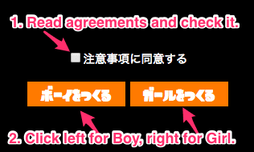
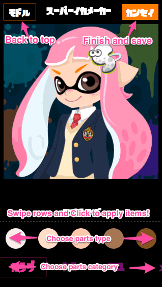

About スーパーイカメーカー

Combining various parts,
Let's make a wild squid of only you!
How to use

Agreements are
※Tracing and image processing is prohibited.
※It is strictly prohibited to divert to goods production etc.
※Please use it for personal icons etc.
※It won't work without JavaScript on.

You can save images by
- [Mobile] long press menu -> save image
- [PC] Right click menu -> save image
※Since you can't save images via in-App browser(like Twitter), please use a normal browser application.
Troubleshoot
Loading assets takes you a little time.Be patient plaese.
If you could not open the page, please follow these steps.
- 0. Check your internet connection
- 1. Delete browser cache
- 2. Try again later
- 3. Ask on Twitter with hash tag
- 4. Ask to author